Executed R edition · Module 06
Work through a complete terrain-analysis workflow: inspect a grid, mosaic tiles, crop and mask, compare resolutions, calculate terrain derivatives, summarise distributions and export checked rasters. Run the steps in order from the project root.
What data are we using?
The compact elevation raster and Luxembourg boundaries are the examples bundled with terra. The original DEM has 90 rows and 95 columns, 0.008333° cells and elevations in metres. It is deliberately coarse: use it to understand the operations, not to map local terrain in detail. Administrative names are source teaching attributes. Data notes.
Complete R script · Elevation GeoTIFF · Slope GeoTIFF · Terrain indices
Install terra once with install.packages("terra"); this downloads and installs the required package. See R installation help. Subsequent runs use its local example files.
6.1 · Read the elevation model and inspect its grid
Use the elevation raster and administrative boundaries bundled with terra. These compact Luxembourg examples let you reproduce the workflow without a network download.
R code
library(terra)
dem <- rast(system.file("ex/elev.tif", package = "terra"))
boundaries <- vect(system.file("ex/lux.shp", package = "terra"))
print(dem)
print(res(dem))
print(crs(dem, describe = TRUE))
print(global(dem, c("min", "max", "mean"), na.rm = TRUE))
stopifnot(same.crs(dem, boundaries))
plot(dem, col = hcl.colors(60, "Terrain"), main = "Example elevation (m)")
lines(boundaries, col = "#40554b", lwd = 0.6)Why these functions? · R help
c()— Collect options, colours, labels and terrain-index names. In R:help("c", package = "base")crs()— Identify the CRS before interpreting cell dimensions or calculating terrain. In R:help("crs", package = "terra")global()— Summarise raster values and quantify differences between grids. In R:help("global", package = "terra")hcl.colors()— Choose perceptually ordered colours for continuous values. In R:help("hcl.colors", package = "grDevices")library()— Load terra and its spatial methods. In R:help("library", package = "base")lines()— Draw vector boundaries over a raster map. In R:help("lines", package = "terra")plot()— Draw the raster with an explicit legend and units. In R:help("plot", package = "terra")print()— Display numerical output beneath the corresponding code. In R:help("print", package = "base")rast()— Read elevation values or reopen an exported GeoTIFF. In R:help("rast", package = "terra")res()— Inspect the raster cell size in its coordinate units. In R:help("res", package = "terra")same.crs()— Check that raster and vector coordinates refer to the same CRS. In R:help("same.crs", package = "terra")stopifnot()— Stop execution if a grid or export verification fails. In R:help("stopifnot", package = "base")system.file()— Locate the example files installed with terra on your own computer. In R:help("system.file", package = "base")vect()— Read the example boundary polygons. In R:help("vect", package = "terra")
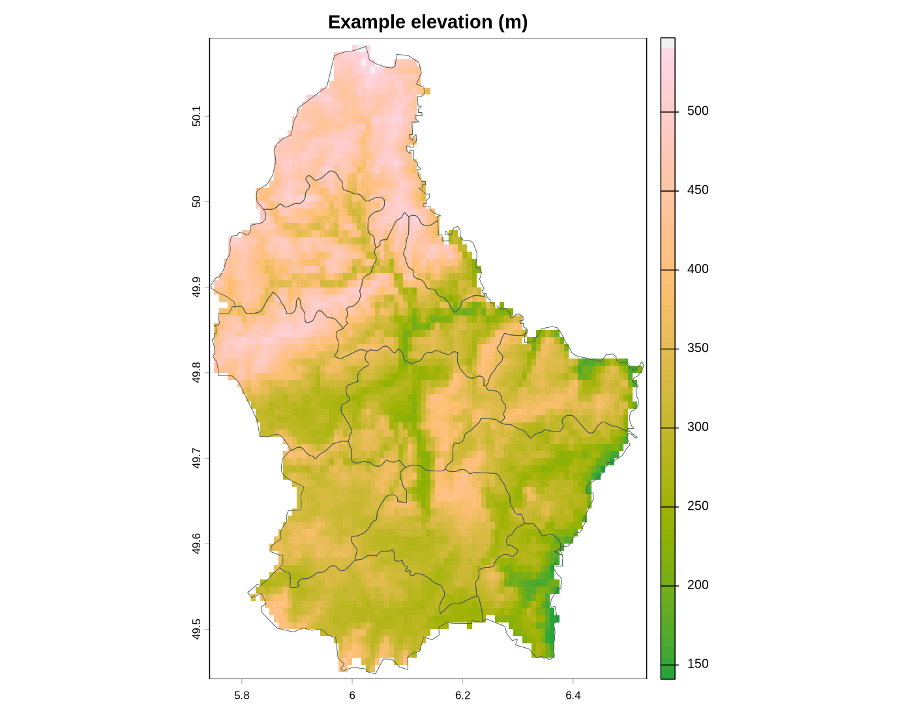
Executed R console output
class : SpatRaster
size : 90, 95, 1 (nrow, ncol, nlyr)
resolution : 0.008333333, 0.008333333 (x, y)
extent : 5.741667, 6.533333, 49.44167, 50.19167 (xmin, xmax, ymin, ymax)
coord. ref. : lon/lat WGS 84 (EPSG:4326)
source : elev.tif
name : elevation
min value : 141
max value : 547
[1] 0.008333333 0.008333333
name authority code area extent
1 WGS 84 EPSG 4326 World -180, 180, -90, 90
min max mean
elevation 141 547 348.3366
This is a 90 × 95 grid in EPSG:4326, with 0.008333° cells and elevation values in metres. Cell widths in metres vary with latitude. The values and boundaries are teaching examples, not a current high-resolution survey.
6.2 · Build a mosaic from aligned tiles
Create two overlapping tiles from the same raster to practise mosaicking. This demonstrates the method; the tiles are not independent acquisitions.
R code
tile_west <- crop(dem, ext(5.74, 6.20, 49.44, 50.20))
tile_east <- crop(dem, ext(6.10, 6.54, 49.44, 50.20))
joined_dem <- mosaic(tile_west, tile_east, fun = "mean")
stopifnot(compareGeom(joined_dem, dem))
error <- global(abs(joined_dem - dem), "max", na.rm = TRUE)
print(error)
stopifnot(error[1, 1] == 0)
for (view in c("West tile", "East tile", "Mosaic")) {
x <- switch(view, "West tile" = tile_west, "East tile" = tile_east, "Mosaic" = joined_dem)
plot(x, ext = ext(dem), col = hcl.colors(60, "Terrain"),
range = c(141, 547), main = paste(view, "- elevation (m)"))
}Why these functions? · R help
abs()— Turn signed differences into absolute differences for error checks. In R:help("abs", package = "base")c()— Collect options, colours, labels and terrain-index names. In R:help("c", package = "base")compareGeom()— Verify that the reconstructed or exported grid matches the reference. In R:help("compareGeom", package = "terra")crop()— Trim the raster to a rectangle aligned with its cells. In R:help("crop", package = "terra")ext()— Define or read a bounding rectangle in xmin, xmax, ymin, ymax order. In R:help("ext", package = "terra")global()— Summarise raster values and quantify differences between grids. In R:help("global", package = "terra")hcl.colors()— Choose perceptually ordered colours for continuous values. In R:help("hcl.colors", package = "grDevices")mosaic()— Combine aligned tiles and average their overlapping values. In R:help("mosaic", package = "terra")paste()— Build figure titles from the selected method or lighting direction. In R:help("paste", package = "base")plot()— Draw the raster with an explicit legend and units. In R:help("plot", package = "terra")print()— Display numerical output beneath the corresponding code. In R:help("print", package = "base")stopifnot()— Stop execution if a grid or export verification fails. In R:help("stopifnot", package = "base")switch()— Choose the raster corresponding to the current comparison tab. In R:help("switch", package = "base")
West tile
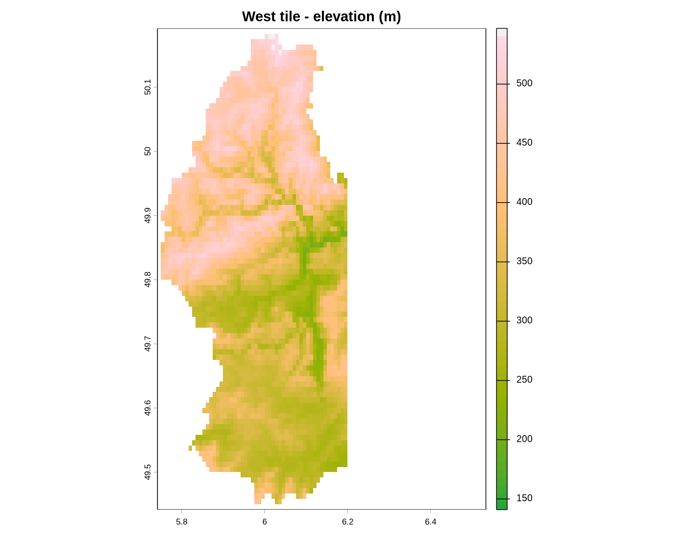
East tile
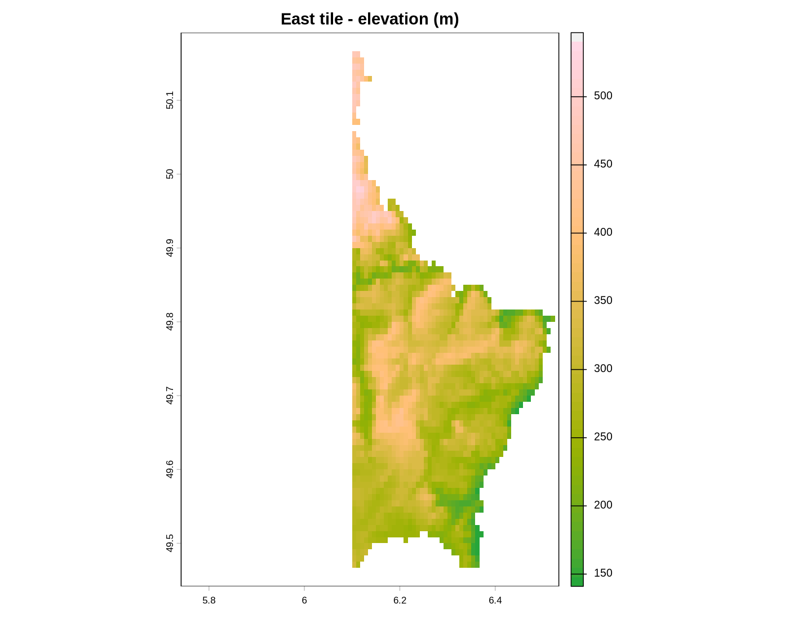
Mosaic
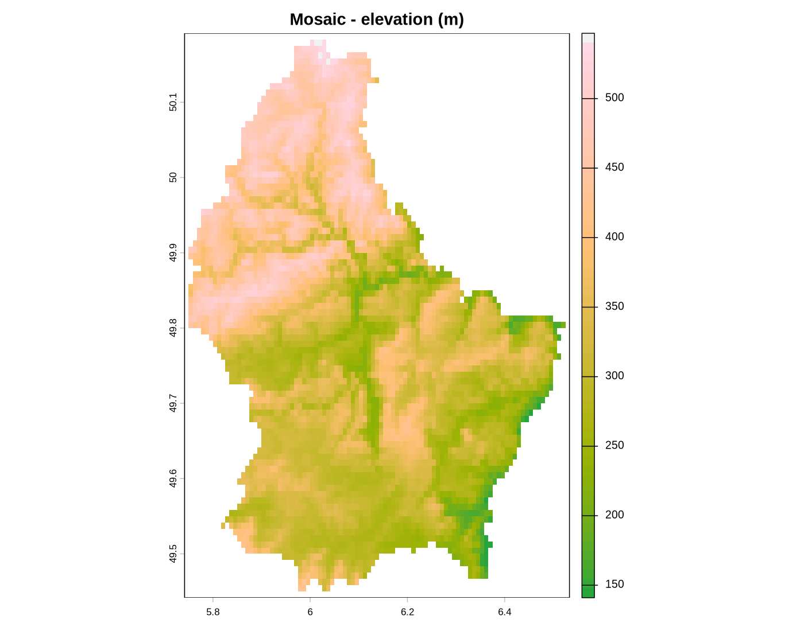
Executed R console output
max elevation 0
The tiles share resolution, origin and CRS. mosaic() averages overlapping cell values here; because both tiles come from the same DEM, the reconstructed mosaic is identical to the original. Independent tiles can have seams and vertical-datum differences.
6.3 · Crop a rectangle, then mask a polygon
Use Clervaux as a local study area. Cropping trims the grid extent; masking removes values outside the polygon.
R code
study <- boundaries[boundaries$NAME_2 == "Clervaux", ]
rectangle <- crop(dem, study)
masked <- mask(rectangle, study)
print(data.frame(cropped_cells = ncell(rectangle),
cropped_values = global(!is.na(rectangle), "sum")[1, 1],
masked_values = global(!is.na(masked), "sum")[1, 1]))
for (view in c("Crop", "Crop and mask")) {
x <- if (view == "Crop") rectangle else masked
plot(x, ext = ext(study) * 1.05, col = hcl.colors(60, "Terrain"), range = c(141, 547),
main = paste(view, "- elevation (m)"))
lines(study, col = "black", lwd = 1.5)
}Why these functions? · R help
c()— Collect options, colours, labels and terrain-index names. In R:help("c", package = "base")crop()— Trim the raster to a rectangle aligned with its cells. In R:help("crop", package = "terra")data.frame()— Present counts and validation results as tables. In R:help("data.frame", package = "base")ext()— Define or read a bounding rectangle in xmin, xmax, ymin, ymax order. In R:help("ext", package = "terra")global()— Summarise raster values and quantify differences between grids. In R:help("global", package = "terra")hcl.colors()— Choose perceptually ordered colours for continuous values. In R:help("hcl.colors", package = "grDevices")is.na()— Identify missing cells or exclude missing elevations from summaries. In R:help("is.na", package = "base")lines()— Draw vector boundaries over a raster map. In R:help("lines", package = "terra")mask()— Set cells outside the selected polygon to NA. In R:help("mask", package = "terra")ncell()— Count the cells in a raster rectangle. In R:help("ncell", package = "terra")paste()— Build figure titles from the selected method or lighting direction. In R:help("paste", package = "base")plot()— Draw the raster with an explicit legend and units. In R:help("plot", package = "terra")print()— Display numerical output beneath the corresponding code. In R:help("print", package = "base")
Crop
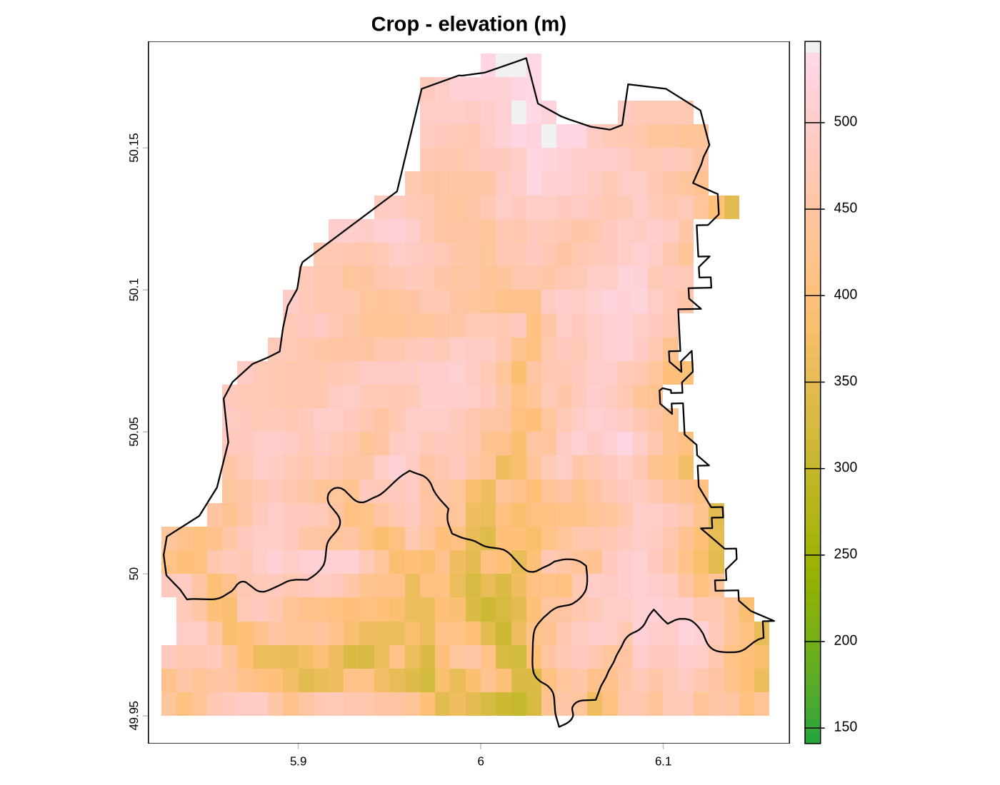
Crop and mask
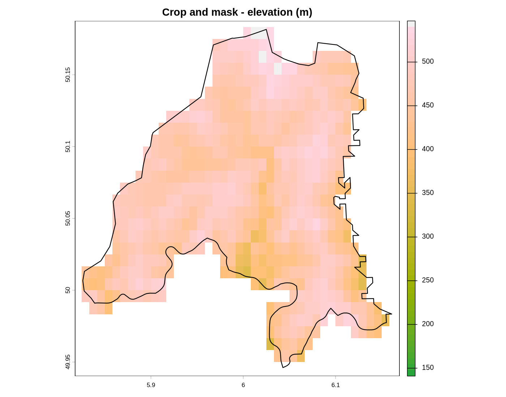
Executed R console output
cropped_cells cropped_values masked_values 1 1120 788 604
The polygon is the same in both views. Cells outside its boundary can still contain values after crop(). mask() sets those values to NA. At this coarse resolution, the raster edge remains stepped and is not a precise administrative boundary.
6.4 · Change the grid and compare resampling methods
Aggregate the elevation to a grid three times coarser, then bring it back onto the original grid with nearest-neighbour and bilinear resampling.
R code
coarse <- aggregate(dem, fact = 3, fun = "mean", na.rm = TRUE)
nearest <- resample(coarse, dem, method = "near")
bilinear <- resample(coarse, dem, method = "bilinear")
print(data.frame(grid = c("Original", "Coarse"),
rows = c(nrow(dem), nrow(coarse)),
columns = c(ncol(dem), ncol(coarse))))
for (view in c("Original", "Nearest", "Bilinear")) {
x <- switch(view, "Original" = dem, "Nearest" = nearest, "Bilinear" = bilinear)
plot(x, col = hcl.colors(60, "Terrain"), range = c(141, 547),
main = paste(view, "- elevation (m)"))
}
print(global(abs(bilinear - dem), "mean", na.rm = TRUE))Why these functions? · R help
abs()— Turn signed differences into absolute differences for error checks. In R:help("abs", package = "base")aggregate()— Create larger mean-elevation cells or dissolve polygons by NAME_1; table summaries use the stats method. In R:help("aggregate", package = "terra")c()— Collect options, colours, labels and terrain-index names. In R:help("c", package = "base")data.frame()— Present counts and validation results as tables. In R:help("data.frame", package = "base")global()— Summarise raster values and quantify differences between grids. In R:help("global", package = "terra")hcl.colors()— Choose perceptually ordered colours for continuous values. In R:help("hcl.colors", package = "grDevices")ncol()— Report grid columns. In R:help("ncol", package = "base")nrow()— Report grid rows or vector feature counts. In R:help("nrow", package = "base")paste()— Build figure titles from the selected method or lighting direction. In R:help("paste", package = "base")plot()— Draw the raster with an explicit legend and units. In R:help("plot", package = "terra")print()— Display numerical output beneath the corresponding code. In R:help("print", package = "base")resample()— Transfer coarse-grid values to the reference grid with a chosen interpolation rule. In R:help("resample", package = "terra")switch()— Choose the raster corresponding to the current comparison tab. In R:help("switch", package = "base")
Original
Nearest
Bilinear
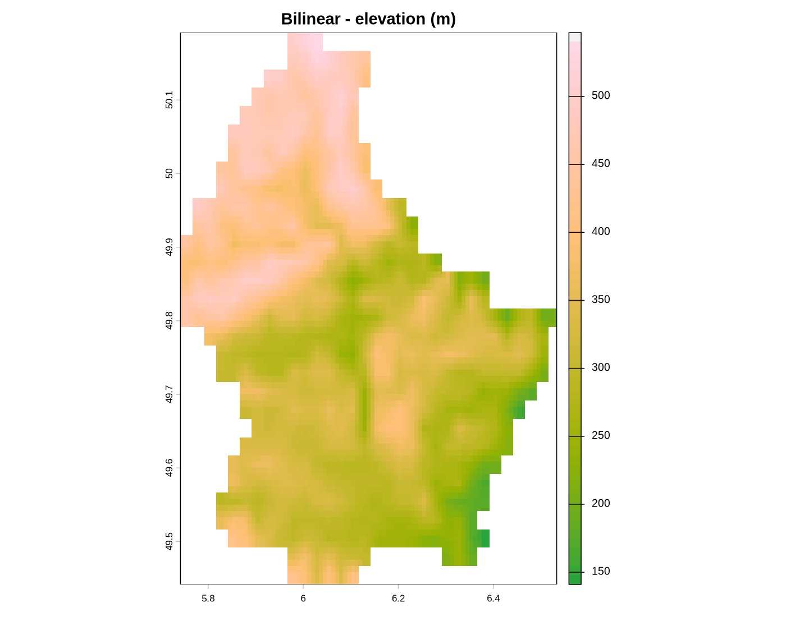
Executed R console output
grid rows columns
1 Original 90 95
2 Coarse 30 32
mean
elevation 17.38617
Nearest-neighbour preserves source cell values; bilinear interpolates a continuous surface and is suitable for elevation. Resampling back to a finer grid does not recover lost terrain detail. For land-cover classes, use nearest-neighbour to avoid inventing intermediate categories.
6.5 · Compute slope and aspect on the original elevation grid
Calculate terrain derivatives before any polygon mask or regridding, so the original neighbouring elevations remain available.
R code
slope_deg <- terrain(dem, v = "slope", unit = "degrees", neighbors = 8)
aspect_deg <- terrain(dem, v = "aspect", unit = "degrees", neighbors = 8)
slope_rad <- terrain(dem, v = "slope", unit = "radians", neighbors = 8)
aspect_rad <- terrain(dem, v = "aspect", unit = "radians", neighbors = 8)
aspect_deg <- ifel(slope_deg == 0, NA, aspect_deg)
print(global(slope_deg, c("min", "max", "mean"), na.rm = TRUE))
plot(slope_deg, col = hcl.colors(60, "YlOrRd"), main = "Slope (degrees)")
plot(aspect_deg, col = hsv(seq(0, 1, length.out = 61)), range = c(0, 360),
main = "Aspect (degrees clockwise from north)")Why these functions? · R help
c()— Collect options, colours, labels and terrain-index names. In R:help("c", package = "base")global()— Summarise raster values and quantify differences between grids. In R:help("global", package = "terra")hcl.colors()— Choose perceptually ordered colours for continuous values. In R:help("hcl.colors", package = "grDevices")hsv()— Create a cyclic colour scale for aspect: north repeats at 0 and 360 degrees. In R:help("hsv", package = "grDevices")ifel()— Hide aspect values where slope is exactly zero. In R:help("ifel", package = "terra")plot()— Draw the raster with an explicit legend and units. In R:help("plot", package = "terra")print()— Display numerical output beneath the corresponding code. In R:help("print", package = "base")seq()— Generate evenly spaced hues for the cyclic aspect colour scale. In R:help("seq", package = "base")terrain()— Derive slope, aspect and local terrain indices from elevation. In R:help("terrain", package = "terra")
Slope
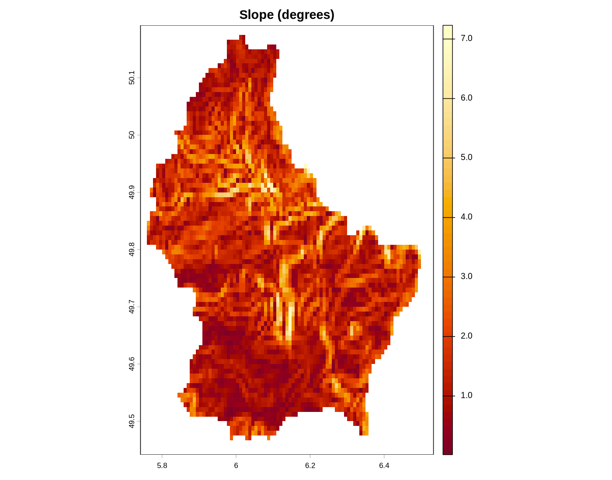
Aspect
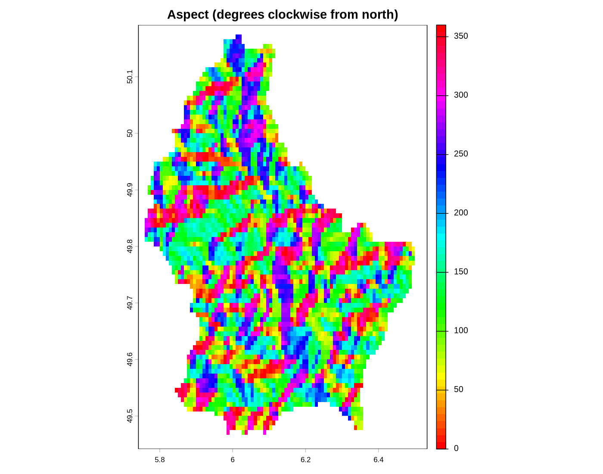
Executed R console output
min max mean slope 0.01418809 7.230566 1.627369
Slope is the steepness of the terrain. Aspect is the downslope orientation: 0°/360° north, 90° east, 180° south and 270° west. Flat-cell aspect is hidden because its direction is not informative. Neighbourhood operations create additional NA cells at data edges. terra accounts for geographic-coordinate distances when the CRS is known.
6.6 · Create hillshade with consistent angular units
Supply both slope and aspect in radians to shade(). The lighting parameters themselves are in degrees.
R code
hillshades <- list(
Northwest = shade(slope_rad, aspect_rad, angle = 45, direction = 315, normalize = TRUE),
Northeast = shade(slope_rad, aspect_rad, angle = 45, direction = 45, normalize = TRUE),
Southeast = shade(slope_rad, aspect_rad, angle = 45, direction = 135, normalize = TRUE)
)
for (view in names(hillshades)) {
plot(hillshades[[view]], col = gray.colors(100, start = 0, end = 1),
range = c(0, 255), main = paste(view, "illumination - brightness (0-255)"))
}
print(global(hillshades$Northwest, c("min", "max"), na.rm = TRUE))Why these functions? · R help
c()— Collect options, colours, labels and terrain-index names. In R:help("c", package = "base")global()— Summarise raster values and quantify differences between grids. In R:help("global", package = "terra")gray.colors()— Map simulated illumination to a grayscale from dark to light. In R:help("gray.colors", package = "grDevices")list()— Keep hillshades together under descriptive names. In R:help("list", package = "base")names()— Select the individual terrain-index layers by name. In R:help("names", package = "base")paste()— Build figure titles from the selected method or lighting direction. In R:help("paste", package = "base")plot()— Draw the raster with an explicit legend and units. In R:help("plot", package = "terra")print()— Display numerical output beneath the corresponding code. In R:help("print", package = "base")shade()— Model illumination using slope and aspect in radians and light angles in degrees. In R:help("shade", package = "terra")
Northwest
Northeast
Southeast
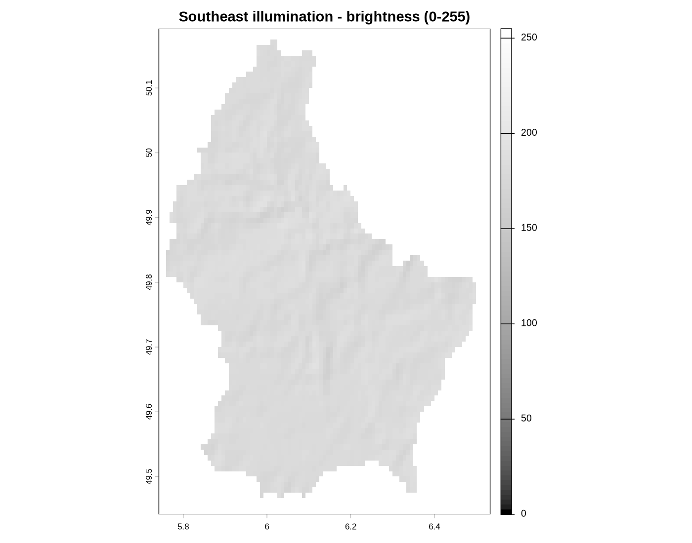
Executed R console output
min max hillshade 163.6736 198.2692
Changing the light direction changes the visual impression, not the terrain. Hillshade is a modelled illumination image, not an elevation or slope map. Mixing degrees and radians would produce a misleading image. Brightness differences are subtle here because the source DEM is coarse and its slopes are gentle.
6.7 · Compare neighbourhood terrain indices
Compute three local terrain indices with the same 3 × 3 cell neighbourhood. Keep their definitions and units distinct.
R code
indices <- terrain(dem, v = c("TPI", "TRI", "roughness"))
print(global(indices, c("min", "max", "mean"), na.rm = TRUE))
for (index in names(indices)) {
x <- indices[[index]]
if (index == "TPI") {
limit <- global(abs(x), "max", na.rm = TRUE)[1, 1]
plot(x, col = hcl.colors(61, "Blue-Red 3"), range = c(-limit, limit),
main = "TPI - local relative elevation (m)")
} else {
plot(x, col = hcl.colors(60, "YlOrRd"), main = paste(index, "(m)"))
}
}Why these functions? · R help
abs()— Turn signed differences into absolute differences for error checks. In R:help("abs", package = "base")c()— Collect options, colours, labels and terrain-index names. In R:help("c", package = "base")global()— Summarise raster values and quantify differences between grids. In R:help("global", package = "terra")hcl.colors()— Choose perceptually ordered colours for continuous values. In R:help("hcl.colors", package = "grDevices")names()— Select the individual terrain-index layers by name. In R:help("names", package = "base")paste()— Build figure titles from the selected method or lighting direction. In R:help("paste", package = "base")plot()— Draw the raster with an explicit legend and units. In R:help("plot", package = "terra")print()— Display numerical output beneath the corresponding code. In R:help("print", package = "base")terrain()— Derive slope, aspect and local terrain indices from elevation. In R:help("terrain", package = "terra")
TPI
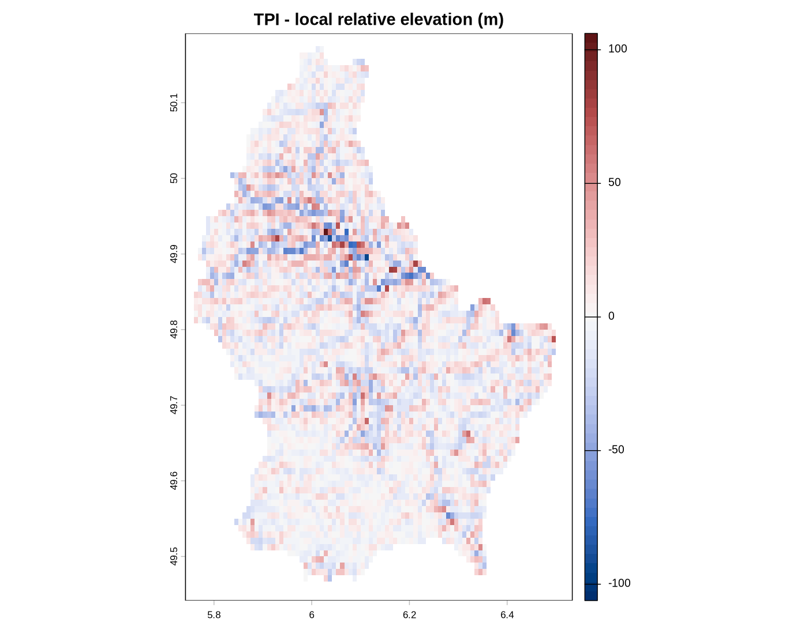
TRI
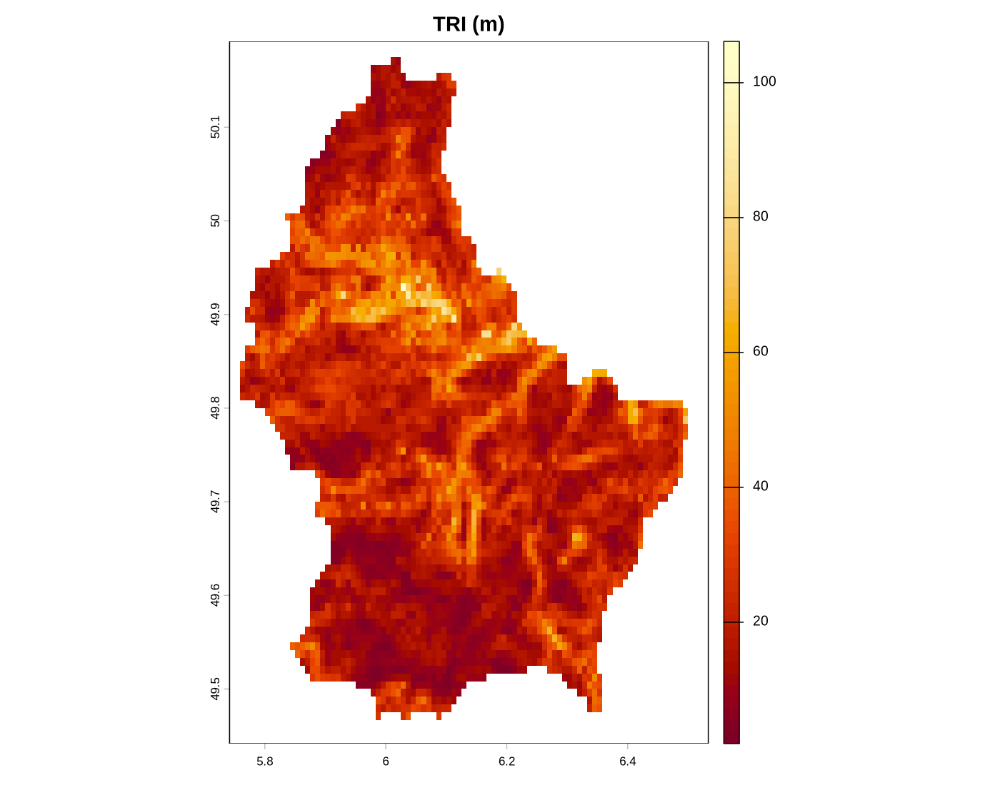
Roughness
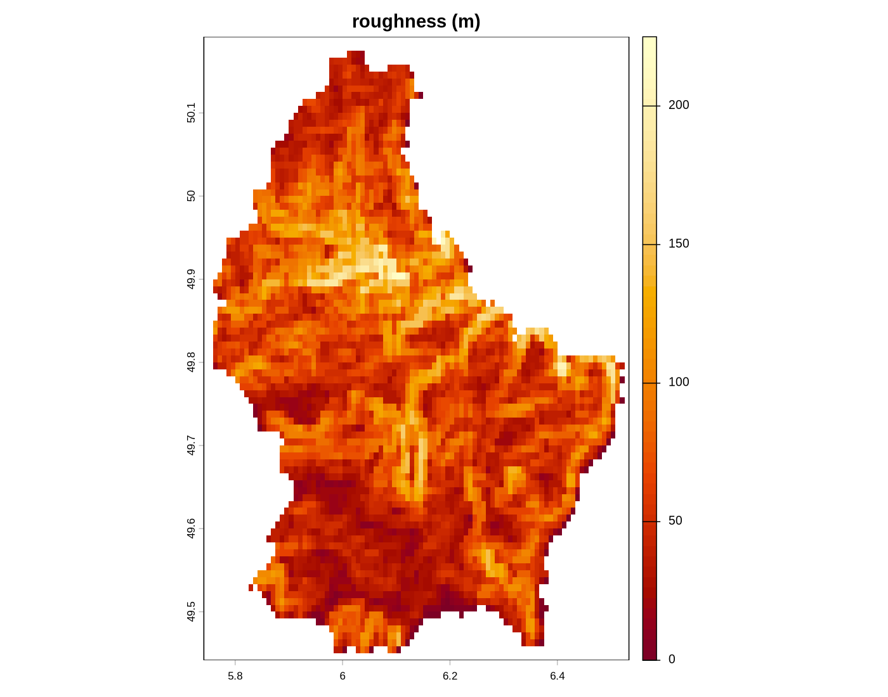
Executed R console output
min max mean TPI -92.75 106.125 0.2495806 TRI 2.00 106.125 23.2174694 roughness 0.00 225.000 66.6791223
TPI is elevation minus the neighbourhood mean: positive values indicate locally higher positions, negative values locally lower positions. terra’s default TRI is the mean absolute elevation difference to eight neighbours. Roughness is neighbourhood maximum minus minimum. All three depend on grid resolution and neighbourhood size.
6.8 · Test how coarser resolution changes the slope map
Calculate slope directly on the coarser elevation grid, then align that derived slope to the original grid only for comparison.
R code
coarse_slope <- terrain(coarse, v = "slope", unit = "degrees", neighbors = 8)
coarse_slope_aligned <- resample(coarse_slope, slope_deg, method = "bilinear")
slope_difference <- coarse_slope_aligned - slope_deg
limit_slope <- global(slope_deg, "max", na.rm = TRUE)[1, 1]
for (view in c("Original grid", "Coarse grid")) {
x <- if (view == "Original grid") slope_deg else coarse_slope
plot(x, col = hcl.colors(60, "YlOrRd"), range = c(0, limit_slope),
main = paste(view, "- slope (degrees)"))
}
limit_change <- global(abs(slope_difference), "max", na.rm = TRUE)[1, 1]
plot(slope_difference, col = hcl.colors(61, "Blue-Red 3"),
range = c(-limit_change, limit_change), main = "Coarse minus original slope (degrees)")
print(global(slope_difference, c("min", "max", "mean"), na.rm = TRUE))Why these functions? · R help
abs()— Turn signed differences into absolute differences for error checks. In R:help("abs", package = "base")c()— Collect options, colours, labels and terrain-index names. In R:help("c", package = "base")global()— Summarise raster values and quantify differences between grids. In R:help("global", package = "terra")hcl.colors()— Choose perceptually ordered colours for continuous values. In R:help("hcl.colors", package = "grDevices")paste()— Build figure titles from the selected method or lighting direction. In R:help("paste", package = "base")plot()— Draw the raster with an explicit legend and units. In R:help("plot", package = "terra")print()— Display numerical output beneath the corresponding code. In R:help("print", package = "base")resample()— Transfer coarse-grid values to the reference grid with a chosen interpolation rule. In R:help("resample", package = "terra")terrain()— Derive slope, aspect and local terrain indices from elevation. In R:help("terrain", package = "terra")
Original grid
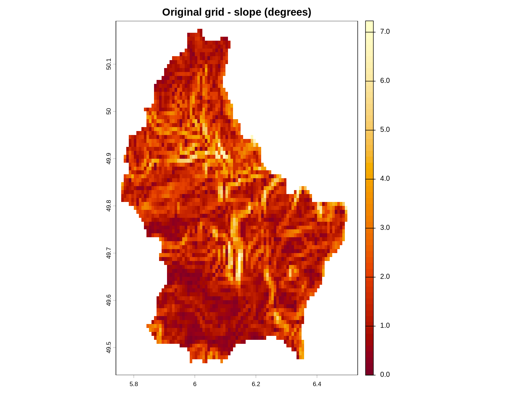
Coarse grid
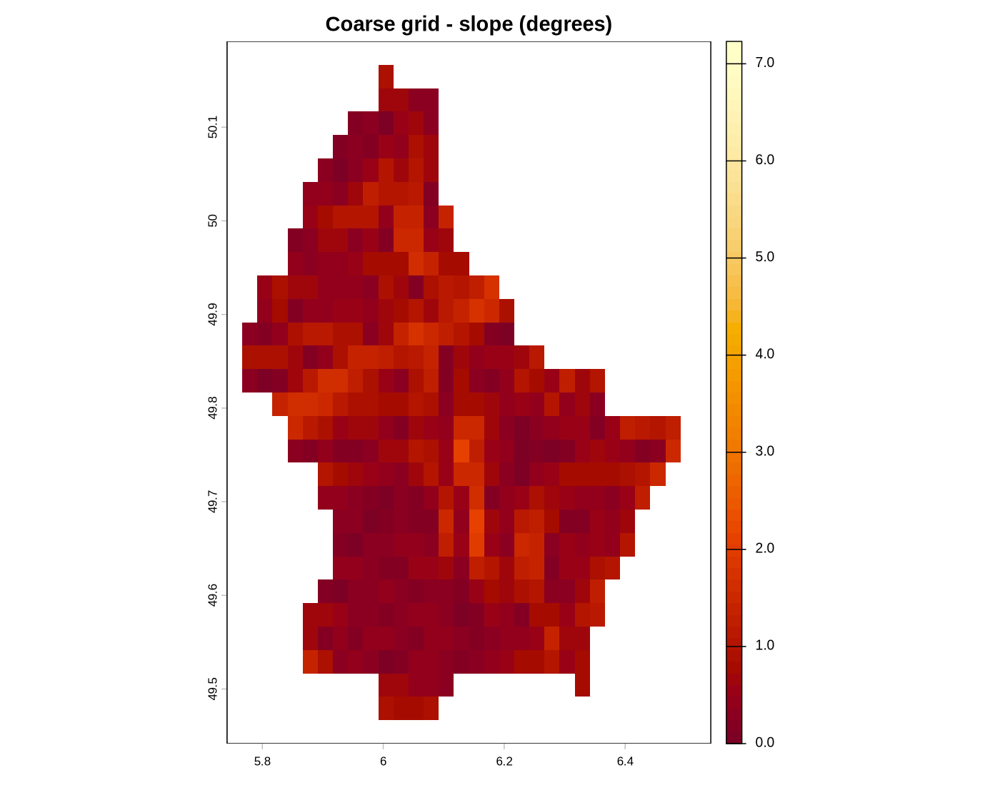
Difference
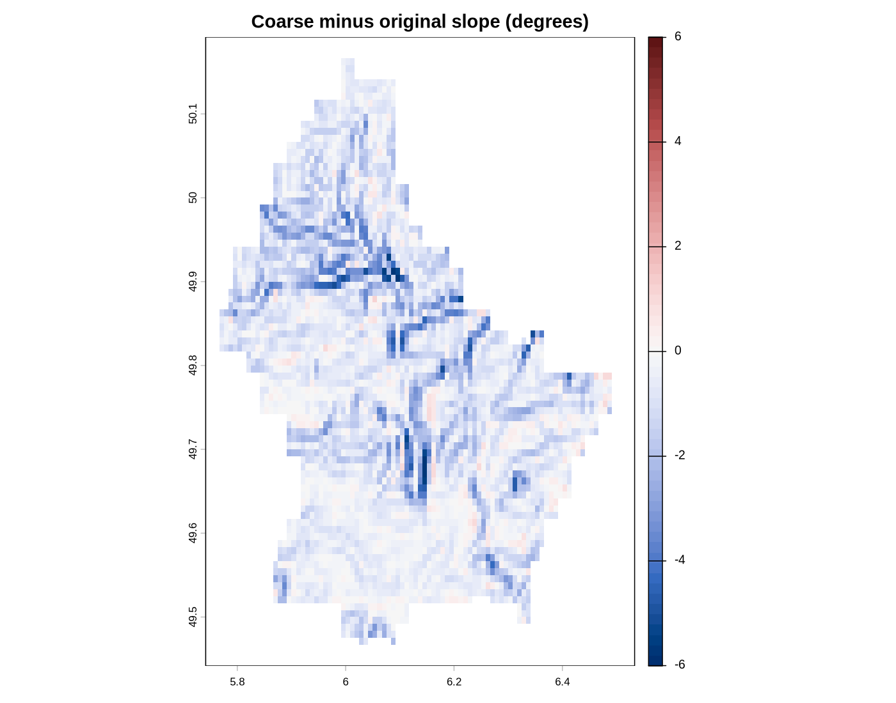
Executed R console output
min max mean slope -6.005774 1.223273 -0.9489445
Smoothing the elevation grid changes the slopes you can resolve. This example often reduces steepness, but local changes can have either sign. The difference is between two resolutions, not an accuracy estimate against field measurements.
6.9 · Summarise elevation distributions with labelled boxplots
Group the source administrative boundaries by NAME_1, then extract elevation cells for a descriptive comparison.
R code
groups <- aggregate(boundaries, by = "NAME_1")
values <- extract(dem, groups)
values$group <- groups$NAME_1[values$ID]
values <- values[!is.na(values$elevation), ]
group_names <- sort(unique(values$group))
colours <- c("#80aa68", "#e6aa74", "#8b9dce")
boxplot(elevation ~ group, data = values, col = colours,
ylab = "Elevation (m)", xlab = "Source administrative group",
main = "Elevation distribution by source group", ylim = c(100, 650))
legend("topright", legend = group_names, fill = colours, bty = "n", cex = 0.75)
print(aggregate(elevation ~ group, data = values, FUN = mean))
print(table(values$group))Why these functions? · R help
aggregate()— Create larger mean-elevation cells or dissolve polygons by NAME_1; table summaries use the stats method. In R:help("aggregate", package = "terra")boxplot()— Compare elevation distributions with median, quartiles, whiskers and outliers. In R:help("boxplot", package = "graphics")c()— Collect options, colours, labels and terrain-index names. In R:help("c", package = "base")extract()— Collect elevation-cell values intersecting each source group. In R:help("extract", package = "terra")is.na()— Identify missing cells or exclude missing elevations from summaries. In R:help("is.na", package = "base")legend()— Explain the boxplot colours using the same group labels. In R:help("legend", package = "graphics")mean()— Calculate arithmetic mean elevation within each source group. In R:help("mean", package = "base")print()— Display numerical output beneath the corresponding code. In R:help("print", package = "base")sort()— Keep group labels in the same alphabetical order as the boxplots. In R:help("sort", package = "base")table()— Count extracted cells in each source group. In R:help("table", package = "base")unique()— Retrieve each source group name once for the legend. In R:help("unique", package = "base")
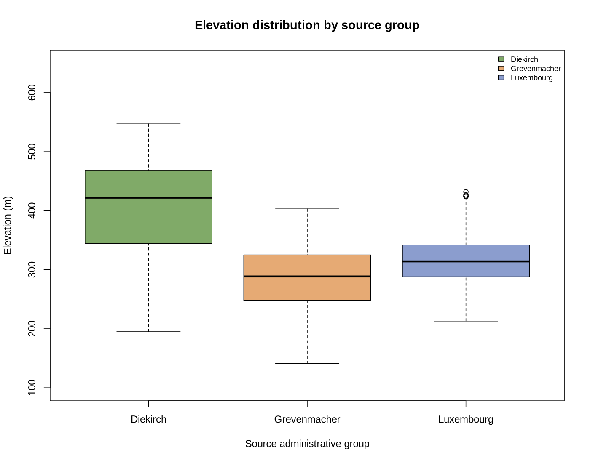
Executed R console output
group elevation
1 Diekirch 403.1779
2 Grevenmacher 283.8853
3 Luxembourg 316.1935
Diekirch Grevenmacher Luxembourg
2024 924 1607
The line is the median; the box spans the first to third quartiles; whiskers extend to the furthest values within 1.5 interquartile ranges; circles show values beyond those whiskers. Colours identify the three source groups. These are raster-cell distributions, not independent field samples or area-weighted statistics. Source groups are historical teaching attributes and need not match current administration.
6.10 · Export rasters and check what was saved
Write reusable GeoTIFFs for elevation, slope, aspect, hillshade and terrain indices. Reopen the slope file and verify its grid and values.
R code
dir.create("outputs/module-06", recursive = TRUE, showWarnings = FALSE)
writeRaster(dem, "outputs/module-06/elevation.tif", overwrite = TRUE)
writeRaster(slope_deg, "outputs/module-06/slope-degrees.tif", overwrite = TRUE)
writeRaster(aspect_deg, "outputs/module-06/aspect-degrees.tif", overwrite = TRUE)
writeRaster(hillshades$Northwest, "outputs/module-06/hillshade-northwest.tif", overwrite = TRUE)
writeRaster(indices, "outputs/module-06/terrain-indices.tif", overwrite = TRUE)
saved <- rast("outputs/module-06/slope-degrees.tif")
stopifnot(compareGeom(saved, slope_deg))
export_error <- global(abs(saved - slope_deg), "max", na.rm = TRUE)[1, 1]
print(data.frame(max_export_difference = export_error))
stopifnot(export_error < 0.00001)
print(list.files("outputs/module-06", pattern = "tif$"))
plot(saved, col = hcl.colors(60, "YlOrRd"), main = "Reopened slope GeoTIFF (degrees)")Why these functions? · R help
abs()— Turn signed differences into absolute differences for error checks. In R:help("abs", package = "base")compareGeom()— Verify that the reconstructed or exported grid matches the reference. In R:help("compareGeom", package = "terra")data.frame()— Present counts and validation results as tables. In R:help("data.frame", package = "base")dir.create()— Create the output directory before exporting rasters. In R:help("dir.create", package = "base")global()— Summarise raster values and quantify differences between grids. In R:help("global", package = "terra")hcl.colors()— Choose perceptually ordered colours for continuous values. In R:help("hcl.colors", package = "grDevices")list.files()— Show which exported rasters are available for reuse. In R:help("list.files", package = "base")plot()— Draw the raster with an explicit legend and units. In R:help("plot", package = "terra")print()— Display numerical output beneath the corresponding code. In R:help("print", package = "base")rast()— Read elevation values or reopen an exported GeoTIFF. In R:help("rast", package = "terra")stopifnot()— Stop execution if a grid or export verification fails. In R:help("stopifnot", package = "base")writeRaster()— Save cell values, grid geometry and CRS as reusable GeoTIFF files. In R:help("writeRaster", package = "terra")
Executed R console output
max_export_difference 1 2.345828e-07 [1] "aspect-degrees.tif" "elevation.tif" [3] "hillshade-northwest.tif" "slope-degrees.tif" [5] "terrain-indices.tif"
writeRaster() saves raster cell values, grid geometry and CRS in a file that R or QGIS can reopen. It differs from png(), which saves a picture of a plot. overwrite = TRUE replaces an existing output. A small numerical difference is possible because the exported floating-point precision can differ from the in-memory calculation.
Practice and interpretation
Repeat the resolution experiment with fact = 2. Compare the resulting slope distribution with the original. Then change the hillshade illumination angle from 45° to 25°: identify which outputs should change and which should remain identical.
Expected reasoning
Aggregation changes the elevation surface and therefore its derived slopes. A finer output grid cannot recover missing elevation information. Changing illumination affects hillshade only; it does not alter the elevation, slope or aspect rasters. Treat differences as processing effects rather than measurement errors.
Official references: terrain definitions and algorithms · shade and angular units · raster export · aggregate for table summaries.